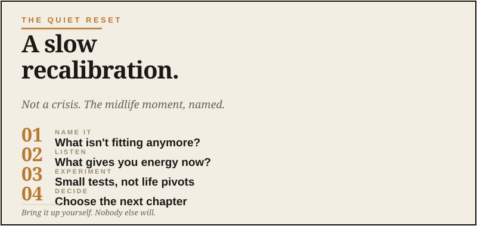

Cornerstone Essay
The window opens quietly.
There’s a moment a lot of men hit somewhere between their mid-40s and early 60s that doesn’t have a great name.
It’s not a midlife crisis. It’s too quiet for that. It’s not regret, exactly, most of the men I’m thinking about have built decent lives they’re proud of. It’s not depression. It’s nothing dramatic enough to require an intervention, though I suppose buying a questionable old Jeep on Facebook Marketplace might make your family wonder.
It’s more like a slow internal recalibration. The kids are older. The career has either peaked or settled. The body is sending signals. The relationships you have are mostly the ones you’re going to have. And underneath the day-to-day busyness, a quiet question starts repeating itself:
What does the rest of this look like?
Not in a panicked way. In an actual way. Twenty or thirty more productive years, give or take. What do you want to spend them on?
I’ve felt this one personally. After 26 years in the Navy, raising three boys, and building TrailRecon into a real thing, there was a point where I had to admit the next season wasn’t going to define itself. Nobody was going to hand me orders. There was no detailer calling with the next assignment. It was on me to decide what came next.
It's the most consequential question of midlife, and almost nobody around you is going to ask it on your behalf. You have to bring it up yourself.
Why this question is hard to think about
It’s hard for three reasons that compound each other.
First, you’re busy. The structure of an adult life is set up to fill every available hour. Job, family, house, obligations, the small administrative weight of being a grown person in the modern world. There isn’t a time slot called think about the rest of your life. If there is, it usually gets eaten by a dentist appointment, a broken sprinkler, or some password reset that turns into a hostage negotiation.
Second, the people available to think it through with you are usually not great for this specific job. Your spouse has her own version of the same question. Your buddies are managing their own situations. Your dad, if he’s still around, is from a generation that didn’t talk about this stuff. A therapist costs money and time. Your kids are too young to be useful here.
Third, the question itself is enormous. The rest of my life is not a question you can answer in an afternoon. So you keep deferring it. You think you’ll get to it on the next vacation. You don’t. You think you’ll get to it after the next big work thing. You don’t.
So the question sits there, getting more weight on it every year, while the years keep going by.
What changed
Here’s the new thing. AI has made one part of this dramatically easier: the ability to think out loud, structurally, when there’s nobody available to think with you.
I want to be careful here. I’m not saying AI is going to give you the answer to the rest of your life. It can’t. The answer comes from you, from real conversations with people who know you, from doing the experiments, from paying attention to what gives you energy and what drains it. A chatbot does not get a vote in your marriage, your family, or your purpose. Let’s not get weird.
But the part of the work that comes before those conversations, the inventory, the questions, the honest naming of what you actually want, AI is genuinely useful for that. And historically, that’s the part that doesn’t happen for most men, because there’s no convenient way to do it.

What the reset can look like
The Quiet Reset isn’t a program. It’s not a thirty-day challenge. It’s a stance you take toward the second half of your adult life.
It usually involves a few moves. Not in any particular order.
Naming what isn’t fitting anymore
Some things you’ve been doing for years stop fitting at some point. Maybe it’s the job that used to be exciting and now feels like an obligation. Maybe it’s the size of the house you don’t need. Maybe it’s the social circle that grew in one direction while you grew in another. Maybe it’s a stance you took twenty years ago that doesn’t reflect who you are now.
The reset starts with permission to name those things, even if you don’t do anything about them yet. Just naming. This isn’t fitting like it used to.
Reconnecting with what gives you energy
A lot of men spend their 40s burying the things that gave them energy in their 20s and 30s, in service of building something. Hobbies that died. Curiosities that got shelved. Friendships that withered. Skills that didn’t pay the bills so they got dropped.
For me, getting back out on the trail wasn’t just about driving dirt roads. It was the quiet, useful kind of reset: time to think, places to explore, history to chase down, a little space between me and the noise. Your version may have nothing to do with vehicles. Good. That’s the point. Find the thing that still pulls at you.
The reset is partly about making an honest inventory of what you used to love that you stopped doing, and asking which of those still resonate. Not all of them will. Some you’ve genuinely outgrown. But the ones that still pull at you are clues.
Considering second-act experiments
This is where AI is most directly useful. You probably have ideas you’ve been quietly carrying, a side business, a return to school, a move, a creative project, a different way of working. Most of them never got tested because testing them takes effort and you weren’t sure they were worth the effort.
AI changes the cost of testing dramatically. You can pressure-test an idea in an afternoon. You can build a rough plan in an hour. You can have a small experiment running by the weekend.
That doesn’t mean every idea gets pursued. Most won’t. But the ratio shifts. You can test more ideas, find the ones that actually have legs, and avoid wasting months on ones that don’t.
Tightening up the operational layer
This is the boring but real part. The Quiet Reset usually involves taking a hard look at the operational stuff that’s been running on autopilot for years. Money. Insurance. Documents. Health basics. Digital security. The household systems that quietly hold everything together.
Most men in midlife are running on systems they set up in their 30s and never revisited. The reset is partly about asking: does this still make sense for the life I’m living now? Most of the answers are surprisingly small adjustments that compound over the next twenty years.
Getting honest about relationships
The relationships you have at 50 are mostly the ones you’re going to have unless you do something deliberate about it. The reset includes asking which ones you want to deepen, which ones have run their course, and which ones you’ve let drift that you actually miss.
This isn’t dramatic. It’s mostly just paying attention to something you’ve been on autopilot about.
Why now is actually the best time
Here’s the thing nobody says clearly enough. If you’re a capable man somewhere between 45 and 65 right now, you’re in a remarkable window.
You have the wisdom that comes from experience. You have enough time left to make changes that meaningfully play out. You have, in most cases, the financial and life flexibility to actually do something with what you decide. And, for the first time in history, you have a tool that can help you think through these questions at a pace and depth that wasn’t available to your father or grandfather at this stage of life.
This isn’t a curse of midlife. It’s a window of unusual leverage.
The men who use this window well will look back in twenty years and say it was when the second half started. The men who don’t will look back and say it was when they got busy with the same things they’d always been busy with, and one day they were 70.
That’s the difference. Not anything dramatic. Just whether you took the question seriously.
The first move
If any of this resonates, the first move is small. Spend an hour this week, alone, with one of these prompts in your AI tool of choice:
That’s it. That’s the whole assignment.
Whatever you do with the answers is yours to figure out. But the conversation itself, the act of taking the question seriously enough to name it, is where the Quiet Reset begins.
You don’t have to have it all figured out by the end. Most men don’t. The point isn’t to arrive somewhere. The point is to start walking. Small steps count. They usually count more than the dramatic ones, because you’ll actually take them.